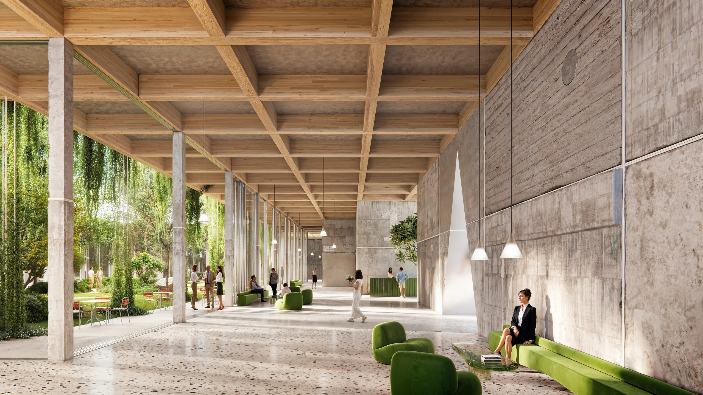
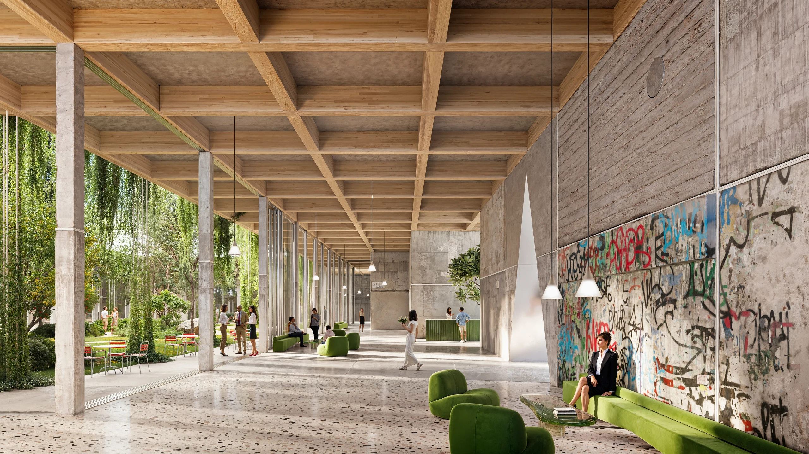
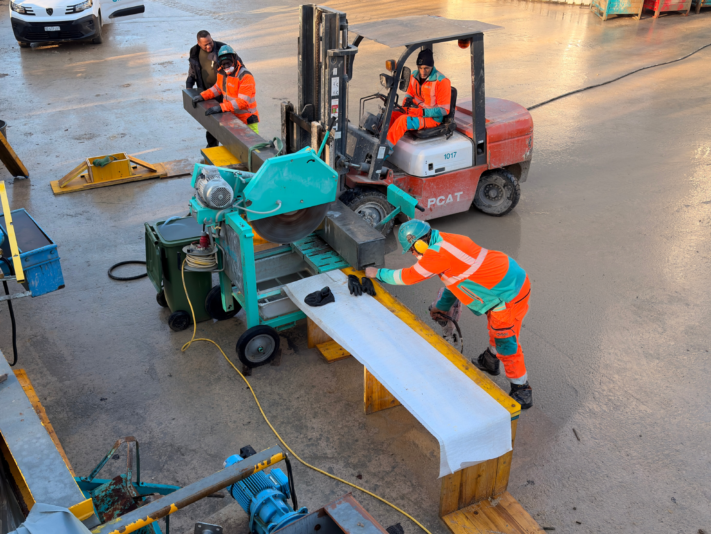

SEPAR Structures
SEPAR develops prefabricated structural components from concrete elements recovered during demolition.
Research objectives include design flexibility, reduced environmental impact and the economic feasibility of prefabrication using recovered concrete.


Development roadmap
Technology Readiness Level (TRL) describes technology maturity on a nine-level scale used in European research programmes.
TRL 1: basic principles observed. SEPAR’s first stage combined initial studies with market research.
Q2 2024 – Q1 2025
Concept and market research
Initial structural concepts and recovery-cost estimates developed alongside market research.
Market requirements
Interviews on market requirements and applications with Swiss Prime Site Immobilien AG, Losinger Marazzi AG and WSP Ingénieurs Conseils SA. Market research conducted with our research partner HES-SO Valais-Wallis.
Innovation Booster Living Labs for Decarbonisation
Support awarded for preparatory market studies.Technology Readiness Level (TRL) describes technology maturity on a nine-level scale used in European research programmes.
TRL 2: technology concept formulated. SEPAR developed the structural concept alongside field recovery trials.
Q1–Q2 2025
Recovery and supply-chain research
First concrete elements recovered with Orllati Group. Structural concept developed for the prototype.
Production-chain costing
Cost assessment covering building and material surveys, cutting and recovery, transport, storage, preparation, fabrication and assembly. Data gaps and practical constraints identified along the chain.
Technology Readiness Level (TRL) describes technology maturity on a nine-level scale used in European research programmes.
TRL 3: experimental proof of concept. SEPAR built and tested the production sequence through fabrication and prototype assembly.
Q2 2025 – Q1 2026
Production-line prototype
A prototype production line developed with Orllati Group: preparing recovered concrete, fabricating components and assembling the structural prototype.
Innosuisse innovation cheque
Awarded for prototype engineering and testing at Berner Fachhochschule (BFH).
Production-line prototypeAvailable after completion of TRL 5–6.
Technology Readiness Level (TRL) describes technology maturity on a nine-level scale used in European research programmes.
TRL 4: technology validated in the laboratory. SEPAR’s assessment concerns the tested prototype and its experimental scope.
Q1–Q3 2026
Load transfer validated in the laboratory
Three full-scale prototypes tested at Berner Fachhochschule (BFH) under axial compression, shear, bending and combined compression and bending.
The tests confirmed load transfer in the prototypes, with ductile behaviour in shear and bending.
Application feasibility studies
Implenia Schweiz AG
Non-binding letter of intent for application feasibility studies.Swiss Federal Railways (SBB)
Feasibility assessment of concrete recovery from the Simplon building, Lausanne, and integration into SEPAR’s structural system.Technology Readiness Level (TRL) describes technology maturity on a nine-level scale used in European research programmes.
TRL 5: technology validated in a relevant environment. This is the next target; the demonstrator is planned.
Next stage
Full-scale demonstrator
A full-scale building fragment or demonstration building to assess materials, construction and performance in a relevant environment. Preparation runs alongside prototype development.
Preparing an application with Empa for an Innosuisse innovation project with implementation partner.
Innosuisse innovation mentoring received to develop and refine the project application.
SEPAR seeks research partnerships and opportunities to join consortia and develop joint projects.